Saint-Jérôme
- Centre-ville
- Domaine Bellefeuille
- Saint-Antoine
- Lafontaine
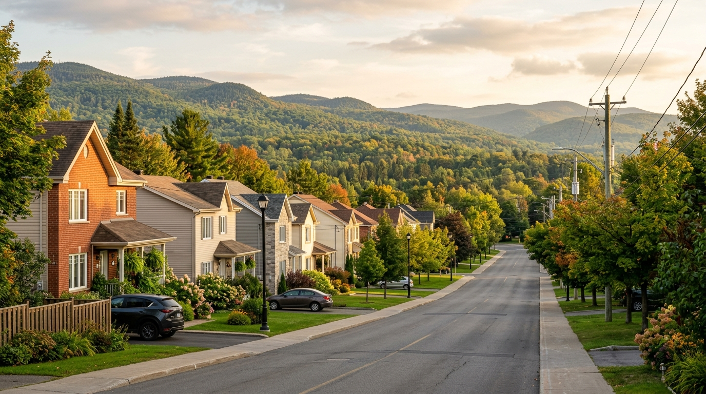
Maison unifamiliale, duplex, triplex, petit commerce, façade en bois traité, intérieur familial. On couvre tout le territoire de la ville et de la MRC, avec la même équipe et la même rigueur quel que soit le projet.
Couverture régionale
On opère depuis le centre de Saint-Jérôme et on roule jusqu'aux limites de la MRC Rivière-du-Nord. Voici où nos chantiers se concentrent.
Services
Maisons unifamiliales, condos, chambres, sous-sols finis, cuisines, salles de bain.
Façades, déclins, balcons, galeries, portes et fenêtres extérieures, garages.
Duplex, triplex, sixplex, petits immeubles. On planifie autour des locataires.
Petits commerces, bureaux, restaurants, salons. Travaux le soir si requis.
Projets variés
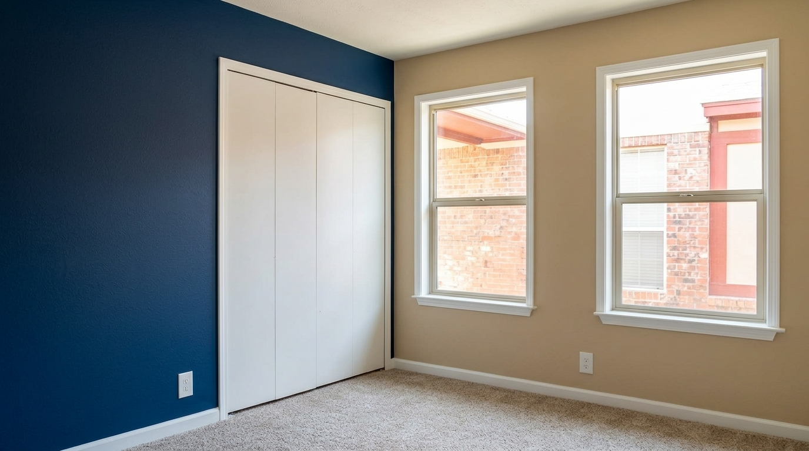
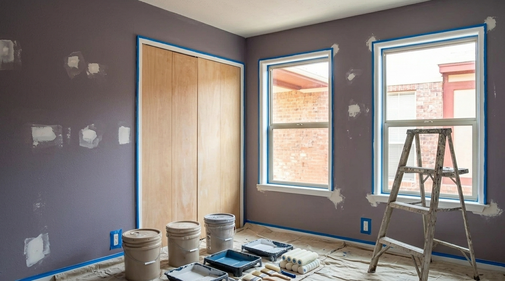
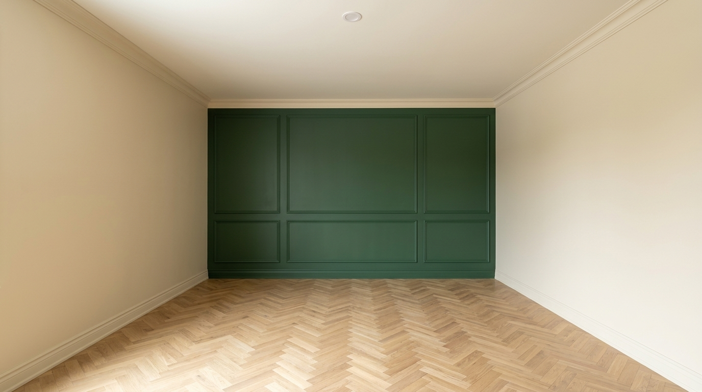
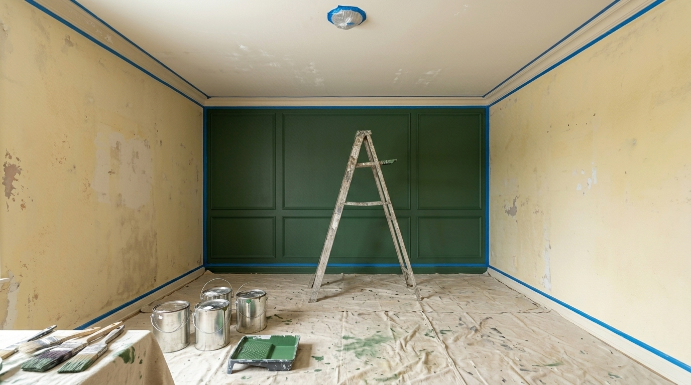
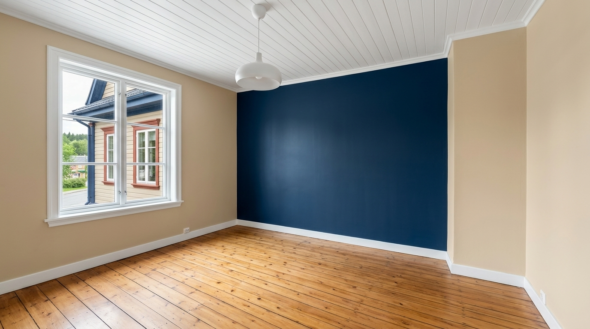
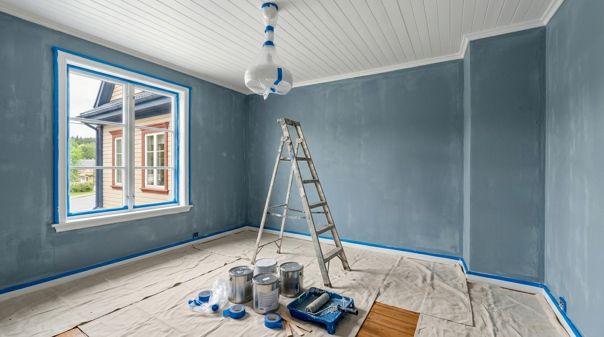
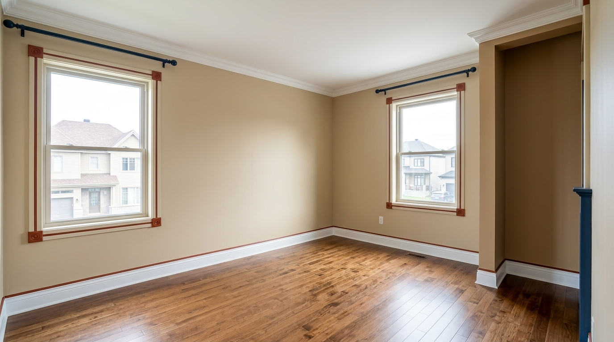
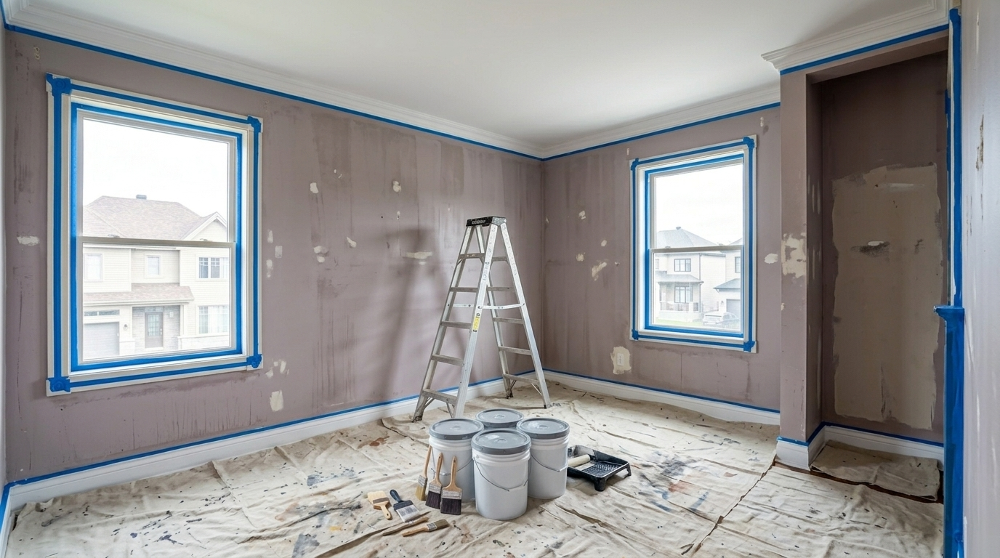
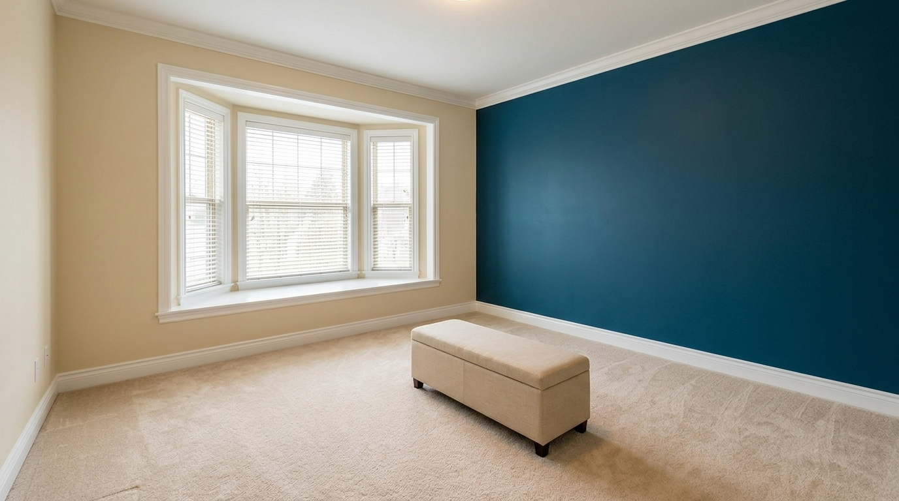
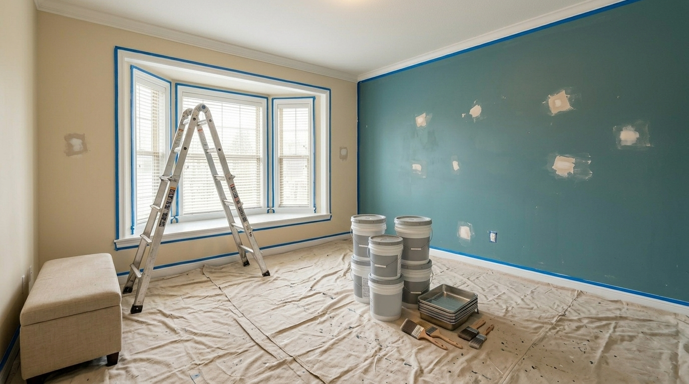
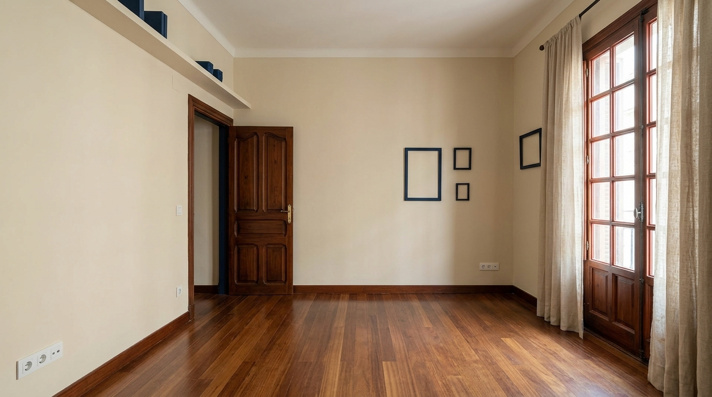
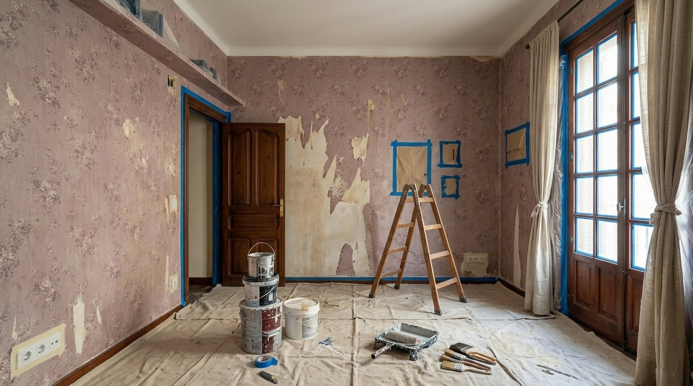
Notre approche
On vient sur place, on relève les surfaces, on note l'état réel — bois, brique, gypse, plâtre. Estimation gratuite remise sous 48h.
On planifie selon votre disponibilité (locataires, commerce ouvert, vie de famille). Calendrier remis avant le début.
On amène les nuanciers, on teste sur les murs, on recommande les produits adaptés (bois traité, brique, intérieur, extérieur).
Lessivage, sablage, calfeutrage, apprêt. La préparation représente 60% du résultat final.
Deux couches systématiques. Plafonds d'abord, murs ensuite, boiseries et détails en dernier. Au pinceau, rouleau ou pulvérisateur selon la surface.
On marche le chantier ensemble à la lumière du jour. Garantie écrite remise. Retouches sans frais durant la première année.
MRC Rivière-du-Nord
On vit dans la région. On connaît les anciens secteurs, les nouveaux développements, les accès difficiles, les routes hivernales. C'est ce qui fait la différence quand un client appelle pour un projet à 35 minutes du dépôt.
Témoignages
On a un triplex à Lafontaine. Trois logements, deux saisons de planification. Tout livré sans gêner les locataires. Garantie écrite signée à la fin.
Sylvain · propriétaire bailleur
Maison familiale repeinte intérieur et extérieur. Trois étages, balcon en bois traité, garage. Une équipe, deux semaines — sans surprise sur la facture.
Famille Dubois · Domaine Bellefeuille
Petit commerce repeint en début d'été. Travail effectué en deux soirées sans fermer la boutique. Personne n'a vu de différence le lendemain matin sauf que c'était propre.
Marie-Ève · commerce centre-ville
Questions fréquentes
Oui, comme l'ensemble de Saint-Jérôme. Lafontaine, Bellefeuille et Saint-Antoine font partie de la ville depuis la fusion. On y a fait des centaines de chantiers.
Oui — duplex, triplex, sixplex et petits immeubles. On planifie autour des locataires, on traite les balcons et escaliers en bois. Garantie écrite par bâtiment.
Oui, mais après le temps de séchage requis. Pour le pin traité standard, c'est minimum 6 mois après l'installation. On utilise un apprêt bloqueur de tanin et une peinture acrylique 100% adaptée.
Oui pour les chantiers d'une journée minimum. Pour les très petits projets très éloignés (1 mur dans une chambre), on demande un regroupement avec d'autres chantiers de la zone.
Intérieur, oui toute l'année. Extérieur, on planifie de la mi-mai à la mi-octobre selon les températures (au-dessus de 10°C, hors humidité forte ou pluie prévue).
Devis ferme par bâtiment. Paiement en deux temps : 30% à la signature, solde à la livraison. Reçus de TPS/TVQ remis pour la déduction fiscale du propriétaire.
Oui, références de propriétaires bailleurs, de familles et de petits commerces de Saint-Jérôme et environs disponibles sur demande au moment du devis.
Garantie écrite de deux ans sur l'application. Pour les immeubles locatifs, on inclut une visite à un an pour vérifier l'état des balcons extérieurs.
Demander une estimation
Que ce soit une chambre ou un sixplex, on vient sur place, on chiffre par surface et on remet un devis ferme. Aucun forfait flou.